ResistorSingle phase linear resistor |

|
Information
This information is part of the Modelica Standard Library maintained by the Modelica Association.
The linear resistor connects the complex voltage v with the complex
current i by i*R = v.
The resistance R is allowed to be positive, zero, or negative.
The resistor model also has an optional conditional heat port. A linear temperature dependency of the resistance is also taken into account.
See also
Conductor, Capacitor, Inductor, Impedance, Admittance, Variable resistor, Variable conductor, Variable capacitor, Variable inductor, Variable impedance, Variable admittance
Parameters (5)
| useHeatPort |
Value: false Type: Boolean Description: =true, if heatPort is enabled |
|---|---|
| T |
Value: T_ref Type: Temperature (K) Description: Fixed device temperature if useHeatPort = false |
| R_ref |
Value: Type: Resistance (Ω) Description: Reference resistance at T_ref |
| T_ref |
Value: 293.15 Type: Temperature (K) Description: Reference temperature |
| alpha_ref |
Value: 0 Type: LinearTemperatureCoefficient (¹/K) Description: Temperature coefficient of resistance (R_actual = R_ref*(1 + alpha_ref*(heatPort.T - T_ref)) |
Connectors (3)
| pin_p |
Type: PositivePin Description: Positive quasi-static single-phase pin |
|
|---|---|---|
| pin_n |
Type: NegativePin Description: Negative quasi-static single-phase pin |
|
| heatPort |
Type: HeatPort_a Description: Conditional heat port |
Components (2)
| v |
Type: ComplexVoltage Description: Complex voltage |
|
|---|---|---|
| i |
Type: ComplexCurrent Description: Complex current |
Used in Examples (10)
|
Modelica.Electrical.QuasiStationary.SinglePhase.Examples
Series circuit with Bode analysis |
|
|
Modelica.Electrical.QuasiStationary.SinglePhase.Examples
Series resonance circuit |
|
|
Modelica.Electrical.QuasiStationary.SinglePhase.Examples
Parallel resonance circuit |
|
|
Modelica.Electrical.QuasiStationary.SinglePhase.Examples
Rectifier example |
|
|
Modelica.Electrical.QuasiStationary.Machines.Examples
Transformer test bench |
|
|
Modelica.Electrical.QuasiStationary.MultiPhase.Examples
Balancing an unsymmetrical star-connected load |
|
|
Modelica.Electrical.QuasiStationary.MultiPhase.Examples
Balancing an unsymmetrical delta-connected load |
|
|
Modelica.Electrical.QuasiStationary.MultiPhase.Examples
Unsymmetrical threephase load |
|
|
Modelica.Magnetic.QuasiStatic.FluxTubes.Examples
Linear inductor with ferromagnetic core |
|
|
Modelica.Magnetic.QuasiStatic.FluxTubes.Examples
Non linear inductor with ferromagnetic core |
Used in Components (1)
|
Modelica.Electrical.QuasiStationary.MultiPhase.Basic
Multiphase linear resistor |